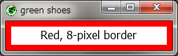

The Green Shoes Manual 1.0.318
Border
枠線はスロットの周囲の線に塗られた、色やグラデーションや画像です。 前のセクションの背景（background）と同様に、枠線（Border）はShoes::Patternの一種です。 
はじめに、すべての枠線はスロットの周囲の外側ではなく、内側を塗ることについて知ることは 重要です。そのため、50ピクセルの幅のスロットに5ピクセルの枠線を塗るなら、それは枠線で 囲まれたスロットが内部に40ピクセルの幅のエリアを持つことを意味します。
これは枠線（Border）をBackgroundの上に塗るなら、その背景の端の上を枠線によって 塗られることも意味します。
正にそのようなスロットがここにあります：
Shoes.app do
stack width: 50 do
border black, strokewidth: 5
para fg "=^.^=", green
end
end
スロットの外側の修正に枠線を塗りたいなら、もう一つのスロットでそのスロットをラップする 必要があります。その結果、スロットの外側に枠線が配置されます。
Shoes.app do
stack width: 60 do
border black, strokewidth: 5
stack width: 50 do
para fg "=^.^=", green
end
end
end
HTMLや他の多くの言語では、枠線は箱の外側に塗られるため、ボックス全体の幅が 増加します。Green Shoesは一貫性を考慮してデザインされているため、枠線や マージンや他のどんなものも気にしないでそれは50ピクセルの幅のままです。
枠線に利用する他のメソッドについてはElementsセクションも確認してください。
to_pattern() » a Shoes::Pattern
枠線を塗るための色、グラデーションまたは画像を元にした基本のパターンオブジェクトを 作成します。
注意: Green Shoesはto_patternメソッドをサポートしていません。
Next: Button